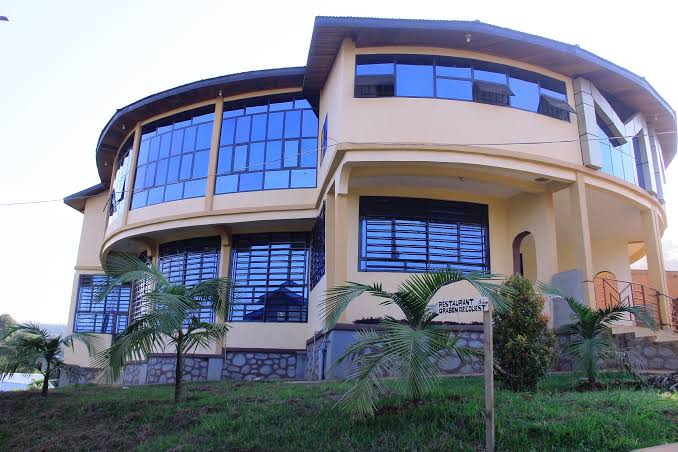

FACULTE DE POLYTECHNIQUE AU SEIN DE L'UNIVERSITE CATHOLIQUE DE GRABEN
FACULTE DE POLYTECHNIQUE AU SEIN DE L'UNIVERSITE CATHOLIQUE DE GRABEN
L'UNIVERSITE CATHOLIQUE DE GRABEN EST UNE DE GRANDE UNIVERSITE A REPUBLIQUE DEMOCRATIQUE DU CONGO; SITUEE A L'EST DU PAYS DANS LA PROVINCE DU NORD-KIVU VILLE DE BUTEMBO SITE HORIZON. ELLE A ETE CREEE PAR MONSEIGNEUR EMMANUEL KATALIKO ANCIEN EVEQUE DU DIOCESE DE BUTEMBO-BENI LE 22 AOUT 1989. CETTE UNIVERSITE REGORGE DE PLUSIEURS FACULTE TEL QUE : LA MEDICINE HUMAINE AVEC COMME DEPARTEMENT SANTE PUBLIC, BIOMEDICALE, OPHTALMOLOGIE; FACULTE DE DROIT AVEC DEPARTEMENT DE DROITS ET LA CRIMINOLOGIE, FACULTE D'AGRONOMIE AVEC LES DEPARTEMENTS SUIVANTs: PHILOTECHNIQUE, ZOOTECHNIE; FACULTE D'ECONOMIE,FACULTE DE SCIENCE POLITIQUE ET ADMINISTRATION, FACULTE DE MEDECINE VETERINAIRE ET LA FACULTE DE LA PHARMACIE. L'UNIVESITE EST EQUIPEE D'UN DE GRAND BIBLIOTHEQUE DU PAYS ET DES LABORATOIRES BIEN EQUIPES PAR DES MACHINES OU MATERIELS SPECIALISES SELON LE DOMAINE. LES BUREAUX DE L'UNIVERSITE SONT SITUES EN VILLE DE BUTEMBO DANS LA CONCESSION DE L'I.T.A.V ET AU SITE UNIVESITAIRE HORIZON.

LA FACULTE DE POLYTECHNIQUE AU SEIN DE L'UNIVERSITE CATHOLIQUE DE GRABEN
LA FACULTE DE POLYTECHNIQUE A VU SON EXISTENCE AU SEIN NOTRE UNIVERSITE A L'ANNEE ACADEMIQUE 2019-2020 OU LA PREMIERE PROMOTION A ETE LANCEE. EN PARTENARIAT AVEC UN NOMBRE D'UNIVERSITES A REPUBLIQUE DEMOCRATIQUE DU CONGO COMME AU MONDE ET LES PROFESSEURS ORDINAIRES VENANT DE A ET LA POUR DISPENSER DES COURS AU SEIN DE NOTRE FACULTE QUI A DEUX PRINCIPAUX DEPARTEMENTS : GENIE CIVIL ET ELECTROMECANIQUE.PRESENTATION DU DEPARTEMENT DE GENIE CIVIL
LE GENIE CIVIL EST L'ENSEMBLE DES INGENIERIES CIVILES ET ART DES CONSTRUCTIONS EN GENERALE DANS TOUTES LES REALISATIONS DE CONSTRUCTIONS CIVILES. LE GENIE CIVIL EST LA CONSTRUCTION EN GLOBAL QUI FORME DES FUTURES INGENIEURS SCIENTIFIQUE ET CAPABLE DE REALISER, RESOUDRE DE PROBLEMES ET INVENTER DE SOLUTION A DES PROBLEMES RENCONTRES DANS LE DOMAINE DE BATIMENT ET CONSTRUCTION DE TOUT OUVRAGE EN APPLICATION AVEC LES SCIENCES APPLIQUEES.

EN OUTRE L'INGENIEUR CIVIL EST UNE SORTE DE CHEF D'ORCHESTRE PRESENT A TOUTES LES ETAPES D'UN PROJET DE CONSTRUCTION COMME: CONCEVOIR,CONSTRUIRE, REHABILITER LES EDIFICES, LES INFRASTRUCTURES ET LES OUVRAGES D'ART ESSENTIELS AUX ACTIVITES DES HOMMES. CELA SONT LES MISSIONS DE L'INGENIEUR GENIE CIVIL. APRES UNE SOLIDE FORMATION DE BASE EN GENIE CIVIL ACQUISE DURANT LES QUATRE PREMIERES ANNEES, LE MONDE DU GENIE CIVIL S'OUVRE PLUSIEURS PARCOURS TELS QUE:
- LES INGENIEURS EN STRUCTURES ET OUVRAGES D'ART SONT SPECIALISES DANS LA CONCEPTIONS DE STRUCTURES ET INFRASTRUCTURES RESISTANTES, ROUTES, PONTS, TUNNELS EGALEMENT DANS LES TRAVAUX DE LA DEMOLITION.
- LES INGENIEURS EN GEOTECHNIQUE SONT SPECIALISES DANS LES MATERIAUX DE LA TERRE ET LES ETUDES DE SOLS
- LES INGENIEURS EN HYDRAULIQUE ET ENVIRONNEMENT SONT SPECIALISES DANS LES SYSTEMES DE COLLECTS, STOCKENT ET DISTRIBUENT L'EAU ET DIMINUER LES IMPACTS SUR L'ENVIRONNEMENT
OTHERS PICTURE FOR CIVIL ENGENEER


PRESENTATION DU DEPARTEMENT D'ELECTROMECANIQUE
L'ELECTROMECANIQUE EST UNE COMBINAISON DE SCIENCES QUI ENGLOBE L'INGENIERIE ELECTRIQUE ET MECANIQUE. LES PERSONNES TRAVAILLANT DANS LE SECTEUR PUBLIC QUE PRIVE ET DANS DIVERSES INDUSTRIES COMME L'ELECTRONIQUE, ENERGIE ELECTRIQUE, TELECOMMUNICATIONS OU LA MECANIQUE ; L'ELECTROMECANICIEN REALISE L'ENTRETIEN COMPLET AINSI QUE LE CONTROLES DESTINES A REPERER TOUTE ANOMALIE JUSTIFIANT DE PLANIFIER A PLUS OU MOINS LONG TERME, LE TYPE DE MAINTENANCE ADAPTE A LA SITUATION.EN OUTRE, LES ELECTROMECANICIENS TRAVAILLENT SUR DES NOUVEAUX SYSTEMES ET NOUVELLES TECHNOLOGIES. CETTE PROFESSION PERMET DE TRAVAILLER DANS DIFFERENTS ENDROITS CAR LES MACHINES ET LES EQUIPEMENTS AUTOMATISES SONT DANS BON NOMBRES D�INDUSTRIES. APRES UNE SOLIDE FORMATION DE BASE EN GENIE ELECTROMECANIQUE ACQUISE DURANT LES QUATRE PREMIERES ANNEES, LE MONDE DE L ELECTROMECANIQUE S'OUVRE A 3 PARCOURS:
- LES INGENIEURS EN AUTOMATIQUE ET MECATRONIQUE QUI EST LA SPECIALISATION COMBINAISON DE LA SYNERGIE ET SYSTEMIQUE DE LA MECANIQUE, ELECTRONIQUE ET INFORMATIQUE TEMPS REEL DANS LES CONCEPTIONS DES SYSTEMES AUTOMOTIQUES PUISSANTS ET LE CONTROLE DE CES SYSTEMES COMPLEXES DONT LES ROBOTS ET AUTRES SYSTEMES ET MACHINES PUISSANTS.
- LES INGENIEURS EN AERONAUTIQUE QUI EST UNE SPECIALISATION DANS LES MACHINES ET APPAREILS RELATIFS A L'AVIATION AU NIVEAU DES AEROPORTS,
- LES INGENIEURS EN MAINTENANCE INDUSTRIELLE QUI EST LA SPECIALISATION DANS LES MACHINES UTILISEES DANS DIFFERENTES INDUSTRUIES C'EST-A-DIRE L'ETUDE DE MACHINE DANS LEUR INTEGRALITE ET LES TECHNIQUES D'UTILISATION ET LEUR ENTRETIEN DANS TOUT SON ETAT.
OTHERS PICTURE FOR ECTROMECANIC INGENEER